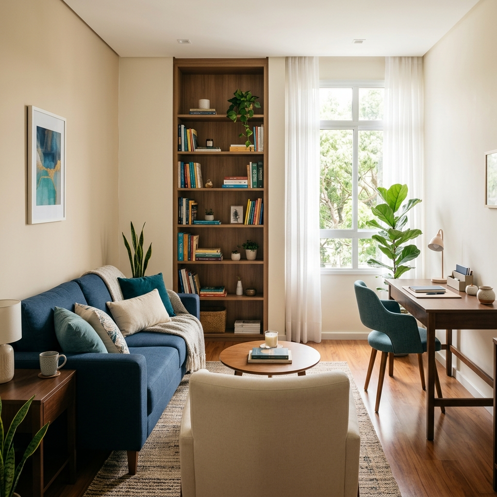

Psicólogo e Neuropsicólogo em Pernambuco para o seu equilíbrio emocional
Transforme sua saúde mental com um atendimento acolhedor, direto e focado no que você realmente precisa. Em Tacaratu ou de onde você estiver, inicie sua jornada de autoconhecimento hoje.
Respostas rápidas para você
Estatísticas e Especialidades
+100 Brasileiros
Atendidos no exterior
Neuropsicologia
Especialização sólida
Jovens & Adultos
Atendimento focado
Flexibilidade
Consultas Online e Presencial

Especialista em Psicologia e Neuropsicologia com foco no seu bem-estar
Sou psicólogo e neuropsicólogo dedicado a oferecer um ambiente acolhedor, seguro e livre de julgamentos. Meu objetivo é proporcionar intervenções que gerem impacto real na sua qualidade de vida, promovendo o autoconhecimento e o equilíbrio emocional.
Com uma vasta experiência que inclui o atendimento de mais de 100 brasileiros no exterior, entendo as complexidades de diferentes contextos culturais e os desafios emocionais de jovens e adultos contemporâneos. Minha abordagem é direta e profundamente focada no paciente.
Seja presencialmente em Caraibeiras (Tacaratu - PE) ou no formato online para qualquer lugar do mundo, meu compromisso é fornecer ferramentas para que você possa lidar melhor com suas angústias e potenciais.
Como podemos ajudar você
Oferecemos intervenções pautadas na ciência e no cuidado humano para apoiar seu desenvolvimento emocional e cognitivo.
Sessões de Psicoterapia
Atendimentos individuais, de casal, familiar e em grupo focados na promoção de saúde mental, autocuidado e equilíbrio emocional. Trabalhamos juntos para superar barreiras.
Saber maisAvaliação Psicológica e Neuropsicológica
Investigação detalhada das funções cognitivas, emocionais e comportamentais para diagnósticos precisos e construção de planos de intervenção assertivos.
Saber maisOrientação Profissional e Supervisão
Suporte especializado para transição ou desenvolvimento de carreira, além de supervisão clínica rigorosa para profissionais e estudantes de psicologia.
Saber maisPronto para dar o primeiro passo rumo a uma vida melhor?
Falar com a equipe no WhatsAppPor que escolher a Samuel Psicologia?
Nosso foco é proporcionar um espaço seguro com excelência técnica.
Atendimento Humanizado
Você não é apenas um diagnóstico. Priorizamos a escuta ativa e o foco absoluto no paciente, entendendo seu contexto e história.
Especialização Sólida
Domínio teórico e prático em Neuropsicologia, garantindo avaliações e intervenções baseadas em evidências científicas.
Flexibilidade Total
Modalidades presencial em Tacaratu - PE e atendimento online para qualquer lugar, adaptando-se à sua rotina.
Expertise Internacional
Experiência robusta com mais de 100 brasileiros acolhidos no exterior, compreendendo desafios culturais e de adaptação.
Como funciona nosso atendimento
Sem burocracias. Tudo foi pensado para reduzir sua ansiedade antes mesmo da primeira sessão.
Contato Inicial
Você nos envia uma mensagem no WhatsApp. Nós agendamos o melhor horário com agilidade e total discrição.
Sessão de Avaliação
Nosso primeiro encontro para entender sua demanda, alinhar expectativas e traçar o melhor formato de intervenção.
Plano e Intervenção
Início do acompanhamento contínuo (psicoterapia ou neuropsicologia), com foco no seu desenvolvimento e bem-estar.
O que nossos pacientes percebem
Resultados reais de um trabalho feito com ética, dedicação e embasamento científico.
"Encontrei um ambiente extremamente seguro. O atendimento online flui tão bem quanto o presencial. Minha percepção sobre minha saúde mental mudou completamente."
— Paciente (Atendimento Online)
"Fiz minha avaliação neuropsicológica e o detalhamento do laudo me ajudou imensamente. É notável o nível de especialização técnica atrelado ao cuidado humano."
— Paciente (Avaliação Clínica)
"Morando fora do país, foi um alívio encontrar alguém que entende nossa cultura e nosso idioma tão bem. As sessões me ajudaram no processo de adaptação."
— Brasileiro no Exterior
Atendimento Psicológico em Tacaratu e todo o Estado
Meu consultório físico está localizado no acolhedor bairro de Caraibeiras, na cidade de Tacaratu - PE. Um espaço planejado para o seu conforto, segurança e privacidade.
Além do atendimento presencial focado na população local e regiões vizinhas, disponibilizo a modalidade de psicoterapia online, garantindo que o cuidado com a sua saúde mental atravesse as fronteiras, cobrindo todo o estado de Pernambuco e o mundo.
-
Endereço (Presencial) Rua Vereador José Gomes de Araújo, 05 - Caraibeiras, Tacaratu - PE
-
Horário de Atendimento Segunda a Quinta, das 08h às 17h
-
Contato WhatsApp: (87) 99987-6543
Iframe do Google Maps será inserido aqui.
Rua Vereador José Gomes de Araújo, 05
Caraibeiras, Tacaratu - PE
Perguntas Frequentes sobre Psicólogo e Neuropsicólogo em Tacaratu
Esclareça suas dúvidas sobre nossos serviços, agendamentos e estrutura clínica.
Dê o primeiro passo para o seu bem-estar
Sua saúde mental não pode esperar. Entre em contato agora e vamos juntos trilhar um caminho de maior equilíbrio e tranquilidade na sua vida.
Respondemos rapidamente em horário comercial (Seg a Qui, 08h às 17h)